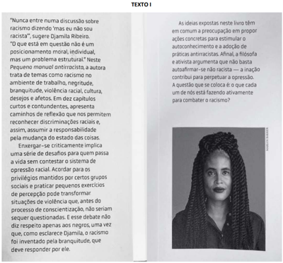

Perguntas de Vestibulares para treinar seus conhecimentos!
1. (UEMA 2021) Leia o texto a seguir para responder à questão. Racismo no Brasil: todo mundo sabe que existe, mas ninguém acha que é racista, diz Djamila Ribeiro
Em entrevista à BBC News Brasil, a autora do Pequeno Manual Antirracista diz o que deve ser feito por quem quer combater o racismo e sobre o papel dos pais na educação antirracista de seus filhos. Segundo a escritora: "Não basta só reconhecer o privilégio, precisa ter ação antirracista de fato. Ir a manifestações é uma delas, apoiar projetos importantes que visem à melhoria de vida das populações negras é importante, ler intelectuais negros, colocar na bibliografia. Quem a gente convida para entrevistar? Quem são as pessoas que a gente visibiliza?" Djamila Ribeiro é mestre em filosofia política pela Unifesp e uma das vozes mais influentes do movimento pelos direitos das mulheres negras no Brasil. Ela está na lista da BBC de 100 mulheres mais influentes e inspiradoras do mundo.
A fala da escritora Djamila Marques, citada no texto, é encerrada com duas interrogativas que corroboram seu argumento contra o racismo. As interrogativas retóricas, em relação ao argumento, produzem no texto, um sentido de
a) Retificação, ao denunciar a presença de personalidades negras em programas de entrevista.
b) Ratificação, ao retratar, equanimemente, o acesso de brancos e de negros nos meios de comunicação.
c) Negação, ao destacar a ausência de uma postura racista em eventos de maior visibilidade social.
d) Indefinição, ao sugerir, de modo vago, os indivíduos sociais ausentes na mídia brasileira.
e) Reiteração, ao chamar a atenção para a invisibilidade de pessoas negras na sociedade.
Alternativa correta: E
reiteração, ao chamar a atenção para a invisibilidade de pessoas negras na sociedade.
2. (UPENET/IAUPE - 2023) A autora Djamila Ribeiro, no livro O pequeno manual antirracista, escreve que:
“Meu irmão mais velho tocou trompete por muitos anos, fazendo inclusive parte da Sinfônica de Cubatão, na Baixada Santista. Toda vez que dizia ser músico, perguntavam se ele tocava pandeiro ou outro instrumento relacionado ao samba. Não teria problema se ele tocasse, a questão é pensar que homens negros só podem ocupar esse lugar.”
A situação apresentada pela autora é melhor conceituada devido
a) À injúria racial.
b) Ao Racismo estrutural.
c) Ao Pacto narcísico da branquitude.
d) Ao Mito da democracia racial.
e) À segregação racial.
Alternativa correta: A
à injúria racial.
3. (UFJF 2024) A obra Pequeno Manual Antirracista, de Djamila Ribeiro, foi publicada em 2019. Leia o texto presente na “orelha” do livro, texto I, e responda à questão.

A intenção comunicativa predominante do texto I – a orelha do livro Pequeno manual antirracista – é de
a) Defender os pontos de vista de Djamila Ribeiro acerca da adoção de práticas antirracistas no cotidiano.
b) Divulgar a necessidade dos leitores combaterem o racismo e assumirem uma posição antirracista.
c) Expor o conteúdo da obra de Djamila Ribeiro, de modo a antecipar algumas das ideias da autora.
d) Narrar a trajetória literária de Djamila Ribeiro, levando o leitor a questionar-se sobre os comportamentos racistas.
e) Relatar detalhadamente os temas dos dez capítulos que compõem a obra de Djamila Ribeiro.
Alternativa correta: C
expor o conteúdo da obra de Djamila Ribeiro, de modo a antecipar algumas das ideias da autora.